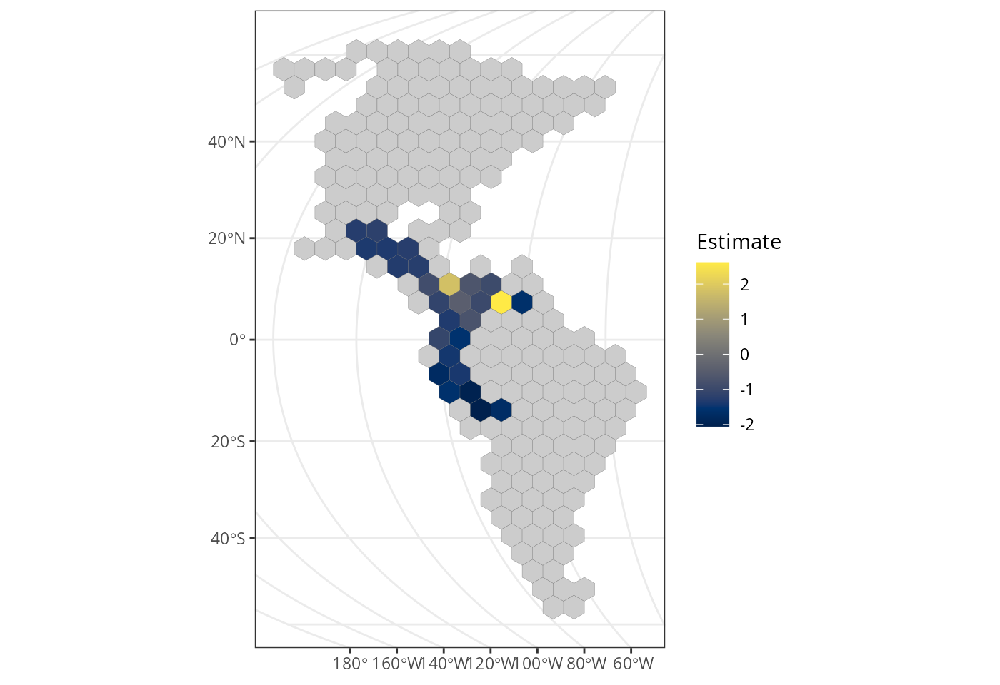
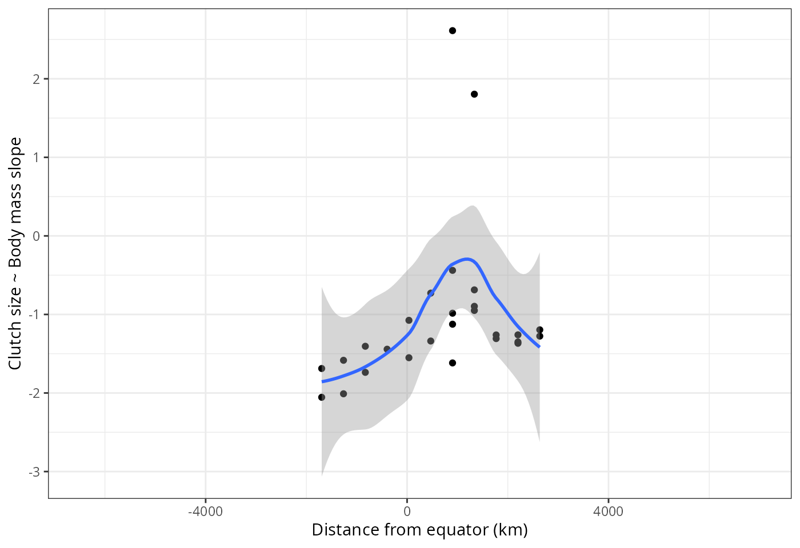

require(rangeMapper)
require(sf)
require(data.table)
require(ggplot2)
require(viridis)
data(dem)
wrens = read_wrens()
wrens$breeding_range_area = st_area(wrens)rangeMapper projectThe project contains nothing but several system tables.
# path is not specified so an in-memory file is created.
con = rmap_connect()Wrens breeding ranges are imported.
rmap_add_ranges(con, x = wrens, ID = 'sci_name')
rmap_prepare(con, 'hex', cellsize = 500)
rmap_add_bio(con, wrens, 'sci_name')
lm(clutch_size~log(body_mass), wrens) %>% summary
#>
#> Call:
#> lm(formula = clutch_size ~ log(body_mass), data = wrens)
#>
#> Residuals:
#> Min 1Q Median 3Q Max
#> -2.41154 -1.00417 -0.02835 0.99885 2.94120
#>
#> Coefficients:
#> Estimate Std. Error t value Pr(>|t|)
#> (Intercept) 5.8573 1.2496 4.687 2.49e-05 ***
#> log(body_mass) -0.8291 0.4183 -1.982 0.0534 .
#> ---
#> Signif. codes: 0 '***' 0.001 '**' 0.01 '*' 0.05 '.' 0.1 ' ' 1
#>
#> Residual standard error: 1.303 on 46 degrees of freedom
#> (36 observations deleted due to missingness)
#> Multiple R-squared: 0.0787, Adjusted R-squared: 0.05868
#> F-statistic: 3.93 on 1 and 46 DF, p-value: 0.05343clutch size ~ body mass vary spatially?First we save a species richness map.
rmap_save_map(con)Then we construct a subset table with all assemblages with a richness of at least 10 species.
rmap_save_subset(con,'sset1', species_richness = 'species_richness > 10')Now we can construct a clutch size ~ body mass map with assemblages containing at least 10 species.
linmod = function(x) {
lm(clutch_size ~ log(body_mass), x) %>%
summary %>% coefficients %>% data.table %>% .[-1] }
rmap_save_map(con, fun= linmod, subset= 'sset1', src='wrens', dst='slope_clutch_size')We get the map as a sf data.frame and plot it with ggplot.
x = rmap_to_sf(con)
ggplot() +
geom_sf(data = x, aes(fill = Estimate), size= 0.05) +
scale_fill_gradientn(colours = viridis(10, option = 'E'), na.value= 'grey80') +
theme_bw()
Here is the “answer” to the question above.
xy = st_centroid(x) %>% st_coordinates
x = cbind(x, xy )
ggplot(x , aes(y = Estimate, x = Y) ) +
geom_point() +
geom_smooth() +
theme_bw() +
ylab('Clutch size ~ Body mass slope') +
xlab('Distance from equator (km)')